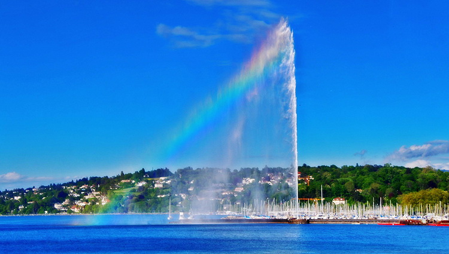

BIỂU TƯỢNG CỦA THÀNH PHỐ GENEVA
Jet d'Eau là đài phun nước lớn nhất tại Geneva và cũng là một trong những cột mốc nổi tiếng nhất của thành phố. Đài phun nước nằm trong hồ Geneva đổ ra sông Rhone. Đây cũng là một trong những đài phun nước cao nhất thế giới với cột nước có thể phun thẳng lên trên tới 140 mét. Nó được vận hành bởi hai máy bơm 500kW từ một trạm bơm chìm. Khi hoạt động, nước được phun lên với vận tốc 200km/giờ cùng 7000 lít nước.
Vị trí đài phun nước
ĐÔI NÉT VỀ LỊCH SỬ
Đài phun nước ban đầu được lắp đặt vào năm 1886 tại Usine de la Coulouvreniere, cách không xa so với vị trí hiện tại nhằm đảm bảo an toàn cho mạng lưới thủy điện gần đó. Tại thời điểm ấy, cột nước chỉ cao 30 mét. Khi đài phun nước trở nên nổi tiếng, nó được chuyển vào gần bờ hơn, đồng thời cũng trở thành biểu tượng để tôn vinh Đại hội Thể dục Liên bang và Liên bang Thụy Sĩ năm 1891. Cột nước lúc này được tăng độ cao lên 90 mét. Đài phun nước chúng ta nhìn thấy ngày hôm nay được lắp đặt vào năm 1951. Ta có thể đến gần đài phun nước bằng cách đi bộ theo chiếc cầu đá ở bờ trái của hồ. Vào ban đêm, Jet d’Eau được chiếu sáng bởi 12 ánh đèn màu.

Đây là niềm kiêu hãnh của người dân Geneva. Trước đây, do lực đẩy của của khí Hydro phát sinh trong lòng hồ mà thỉnh thoảng trên mặt hồ lại xuất hiện những vòi nước phun ngoạn mục. Nhận thấy người dân rất thích thú với hiện tượng này nên vào 1891 chính quyền thành phố đã cho đặt một chiếc máy bơm có công suất cực mạnh dưới lòng hồ để tạo nên một suối phun nhân tạo, góp phần tạo nên một cảnh quan ngoạn mục cho Geneva.
Khi cao điểm, tốc độ của giếng phun có thể đạt đến 220 km/h, tạo ra một cột nước cao đến 150 m với 7 tấn nước. Qua ánh sáng mặt trời, làn nước mỏng lung linh, phảng phất hình ảnh của một chiếc cầu vồng 7 sắc tuyệt đẹp, tựa như dải lụa mỏng manh đang phất phơ bay giữa trời xanh.
@ Nguồn: dulichhoanmy.com